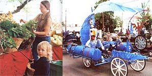

Farmer's markets overflowing with local, organically grown fruits and vegetables (left), the annual da Vici Day's crazy kinetic sculpture races (at right), and the beauty of the forest and farmland combine to nourish Corvallis, Oregon residents in body, mind and spirit.